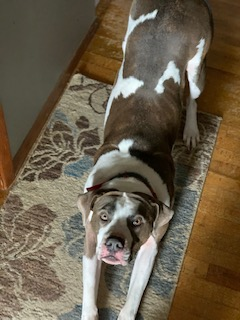
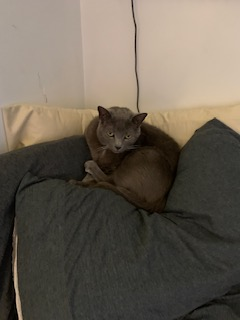

Photos of my Pets
 These are my two pets, Tazer on the left and Dixie on the right. Tazer is full American Pitbull and is currently 4 years old. Dixie is a rescue that we got back in 2007. We aren't totally sure of her breed, but we can assure you that her pedigree is quite hefty.